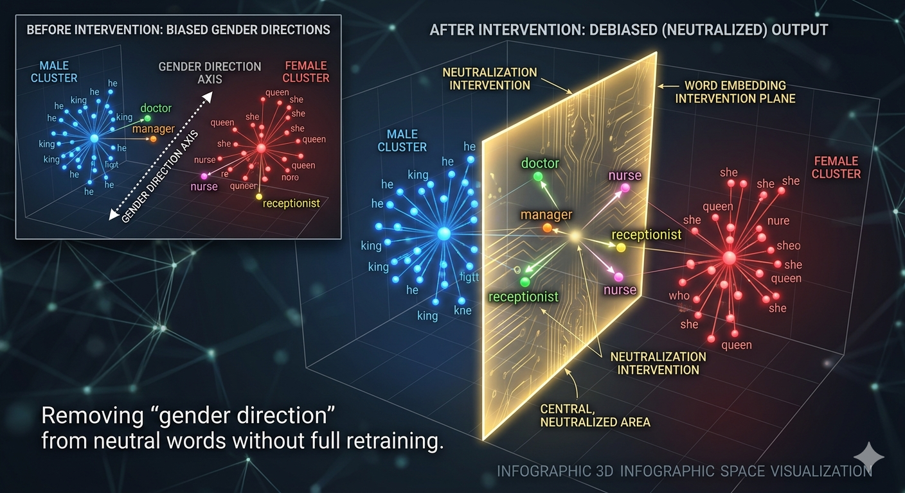

Bias Mitigation
Mitigation involves technical data augmentation, model-tier fairness constraints, governance auditing, and inference-time solutions like prompt engineering and multi-agent frameworks.1. Fundamental Technical Interventions
Identifying bias is only the first step; technical intervention is required to ensure equity. According to Zhao et al. (2019), two primary methods effectively reduce systemic bias:
- Data Augmentation (CDA): Balancing training sets by swapping gendered terms (e.g., changing "he" to "she"). This prevents the model from associating specific roles with a single gender.
- Neutralization (Debiasing): A mathematical intervention in Word Embedding space to remove "gender directions" from neutral words like "doctor" or "manager" without full retraining.
